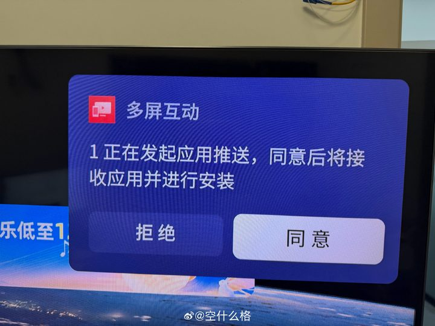
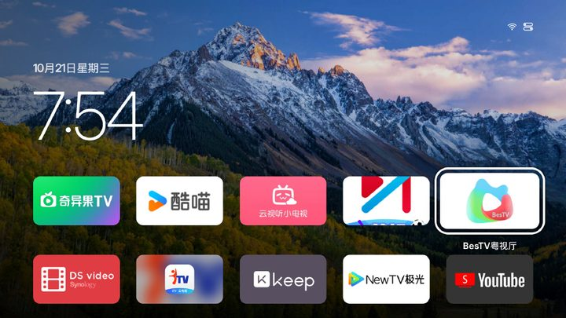
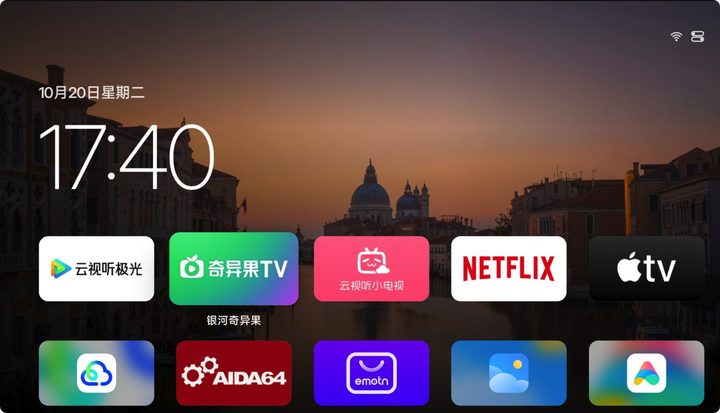
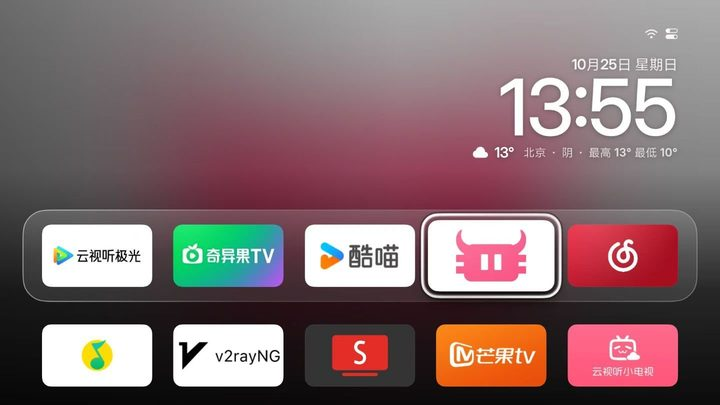
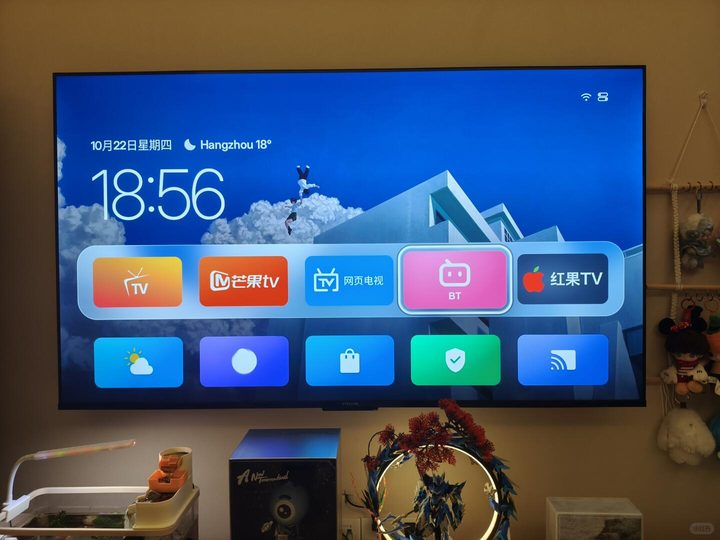
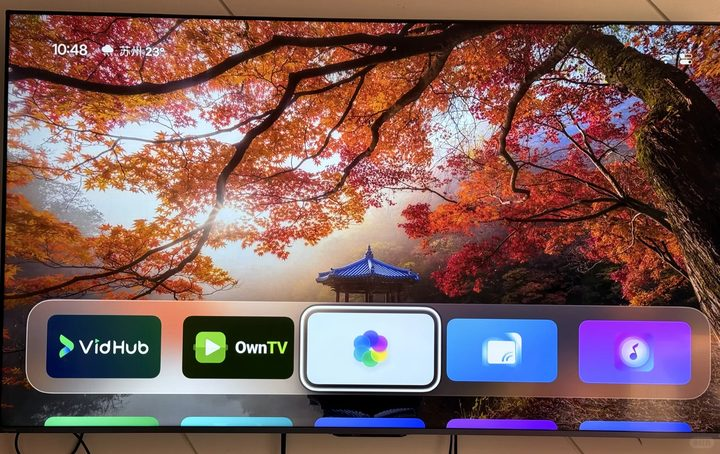
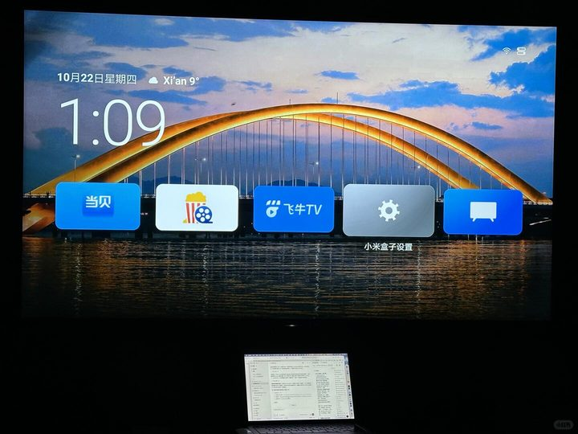
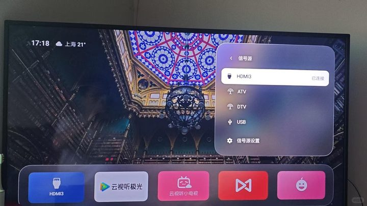

胡子盖10 月 25 日
怎么说呢，这以后还需要啥 Apple TV 啊，感谢 @酱紫表 的开源 Aerial 桌面。
用户评价
来自微博、X 和小红书的分享。
怎么说呢，这以后还需要啥 Apple TV 啊，感谢 @酱紫表 的开源 Aerial 桌面。
牛逼！刚用 @酱紫表 的最新项目给我这台 TCL 75Q10G Pro 装上了「苹果」桌面 Aerial。实测操作下来确实很简单，有台电脑就行。先获取电视 WiFi 地址、开启 ADB 模式并授权，然后把操作指令丢给 AI Agent 就行了。我用的是 Workbuddy Step-5-Preview 模型，三五分钟搞定。

非常好用，也非常简单的操作，我的老索尼电视终于清爽了…

国产电视终于有救了！……Aerial TV：给国产电视换上苹果风格桌面。没有开屏广告，没有烦人的推荐流，只有简洁的 App 图标、时钟、精美壁纸，还有 Apple TV 同款风格的 4K 屏保。支持开机自动启动，免费开源。

这台电视买了很多年，只有 2GB 内存，系统还停留在 Android 9……现在开机就是一张干干净净的航拍壁纸，没有广告，没有推荐位，也不用再忍受那些莫名其妙的预装软件。

AppleTV 平替？用 workbuddy 给国产电视换一个干净的桌面！……Aerial 这款专为国产电视设计，用一句提示词给 AI Agent 就能办完，感兴趣的赶紧收！
一直苦于雷鸟鹏 7 Pro 没有灵动桌面，这次终于是找到上位替代了，用的桌面项目是 Aerial，用 AI 跑了十几分钟就好了，还是挺简单的，用雷鸟电视的可以试试。

给老电视换个新灵魂！这桌面越看越顺眼。干净的布局、舒服的视觉效果，再配上有氛围感的屏保，打开电视不再只是为了追剧，光是待机时看着都觉得赏心悦目。

我的设备是小米盒子 3 增强版，安卓 5.1……用 @酱紫表 的项目（Aerial TV）顺利安装，还能开机自启。

18 年买的小米电视是安卓 6……装了 Aerial TV，已满足需求。打开电视无广告，去除乱七八糟的推荐，取而代之的是 Apple TV 风格桌面，直接展示 B 站等应用，还有信号源选择。
